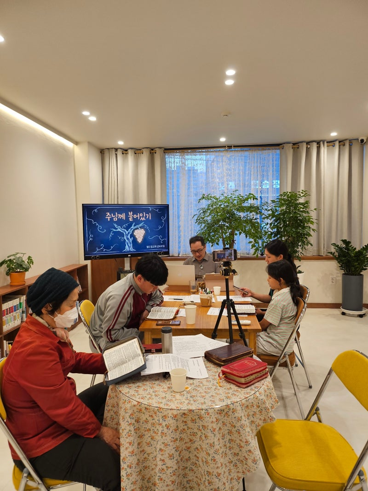
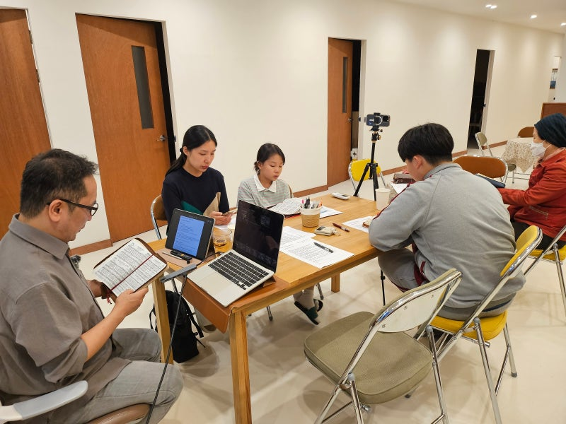
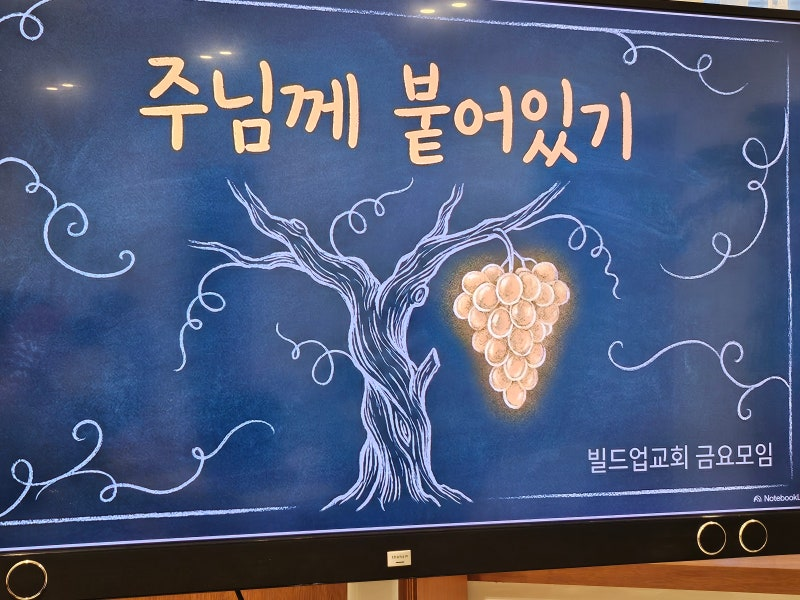
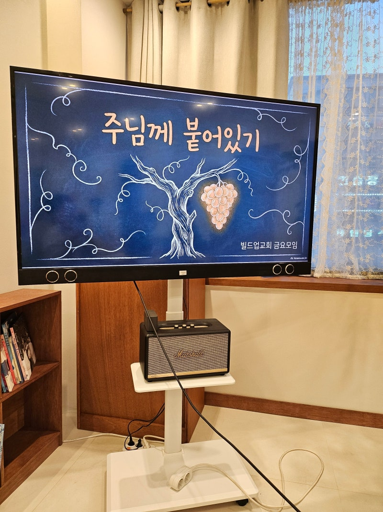
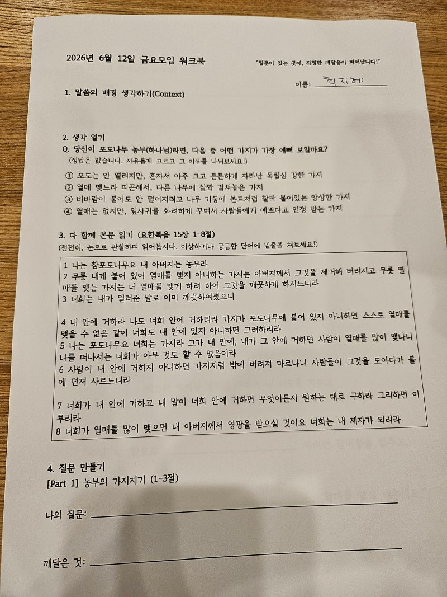
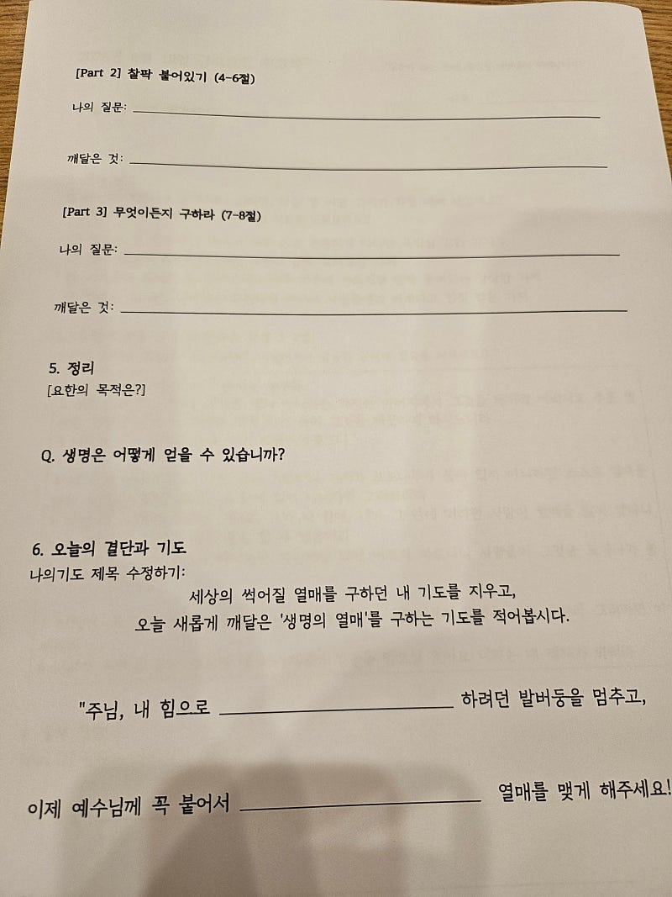
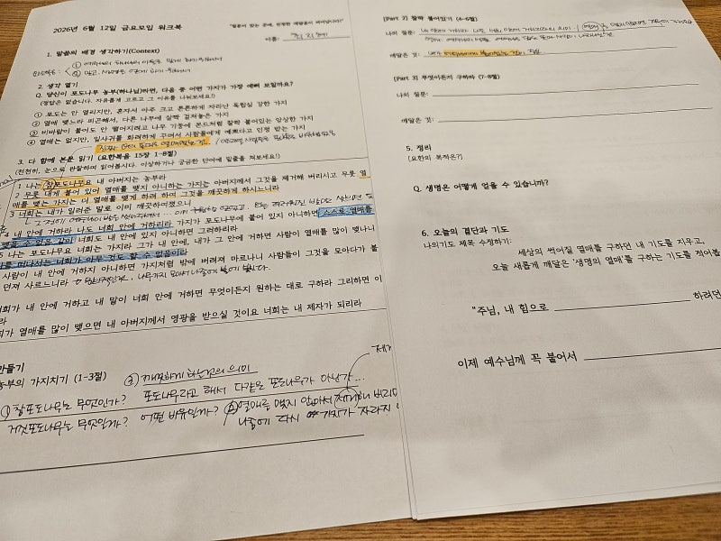

6월 12일 빌드업 교회에서는금요 성경공부 모임에서 나는 참포도나무다 — 요한복음 15장 1-3절의말씀을 읽어가며 생각하고 질문하며 답하는 시간을 가졌습니다~^^ "나는 참포도나무요 내 아버지는 농부라무릇 내게 붙어 있어 열매를 맺지 아니하는 가지는 아버지께서 그것을 제거해 버리시고 무릇 열매를 맺는 가지는 더 열매를 맺게 하려 하여 그것을 깨끗하게 하시느니라 너희는 내가 일러준 말로 이미 깨끗하여졌으니"(요한복음 15:1-3) "참"포도나무

예수님은 그냥 "나는 포도나무다"라고 하지 않으셨어요. "나는 참포도나무다." 왜 "참"이라는 단어를 쓰셨을까요? 구약성경에서 하나님은 이스라엘을자신이 직접 심은 포도나무로 부르셨어요. "주께서 한 포도나무를 애굽에서 가져다가" (시편 80:8) 이스라엘은 하나님의 백성으로 선택받았어요.하나님과 언약을 맺은 민족.세상 가운데 하나님을 드러내야 할 존재. 그런데 이스라엘은 반복적으로 실패했어요.포도나무가 되어야 했지만제대로 된 열매를 맺지 못했어요.

그래서 예수님이 오셔서 선언하시는 거예요. "내가 바로 그 참포도나무다." 이스라엘이 감당하지 못했던 것을예수님이 완성하셨다는 선언이에요. 이게 언약의 성취예요. 이스라엘 → 포도나무가 되어야 했지만 실패예수님 → 참포도나무로 오셔서 완성하심우리 → 그 포도나무에 접붙여진 가지농부이신 아버지 — 누가 주도권을 갖고 있는가예수님은 아버지를 농부로 소개하세요. 농부는 포도원의 주인이에요.포도나무를 심은 분.가지를 돌보는 분.열매를 기대하는 분. 이게 중요한 이유가 있어요.

우리는 흔히 신앙을내가 하나님께 나아가는 것으로 이해해요. 내가 열심히 하면 하나님이 받아주신다.내가 잘하면 하나님이 기뻐하신다. 그런데 농부의 이미지는 반대예요. 하나님이 먼저 심으셨어요.하나님이 먼저 돌보세요.하나님이 주도권을 갖고 계세요. 개혁주의 신학이 강조하는 것이 바로 이거예요. 우리가 하나님을 선택한 게 아니라하나님이 먼저 우리를 선택하셨다.

신앙의 출발점은 내 열심이 아니라하나님의 주도적인 은혜예요. 가지치기 — 힘든 시간의 의미3절에서 예수님은 말씀하세요. "열매를 맺는 가지는 더 열매를 맺게 하려 하여 그것을 깨끗하게 하시느니라" 농부는 열매 맺는 가지를 깨끗하게 해요.이게 가지치기예요. 여기서 중요한 걸 봐야 해요.가지치기를 당하는 가지는문제 있는 가지가 아니에요.열매를 맺고 있는 가지예요.

그런데 왜 자를까요? 농부는 알거든요.지금보다 더 풍성한 열매를 위해불필요한 것들을 쳐내야 한다는 걸. 삶에 힘든 시간이 올 때이 관점이 전부를 바꿔요. "하나님이 나를 버리셨나?"가 아니라"하나님이 나를 더 풍성하게 하시려는 과정인가?" "이미 깨끗하여졌으니" — 복음의 선언3절 마지막이 핵심이에요. "너희는 내가 일러준 말로 이미 깨끗하여졌으니" 예수님이 제자들에게 하신 말씀이에요. "이미" 과거형이에요.앞으로 깨끗해질 것이 아니라이미 깨끗해졌다는 선언.

어떻게요? 예수님의 말씀으로. 이게 복음이에요. 내가 충분히 노력해서내가 충분히 깨끗해져서하나님의 백성이 되는 게 아니에요. 예수님의 말씀, 즉 복음으로 이미 깨끗해진 것. 하나님의 백성으로 살아가는 출발점은내 자격이 아니라예수님이 이미 이루신 것이에요.

오늘 우리에게 묻는 질문"나는 내 힘으로 열매를 만들려 하고 있는가,아니면 참포도나무이신 예수님께 붙어있는가?" 하나님의 백성으로 산다는 건더 열심히 종교적으로 사는 게 아니에요. 농부이신 하나님이 먼저 심으셨고참포도나무이신 예수님이 이미 완성하셨고우리는 그 은혜 안에 붙어있으면 됩니다. 그 연결이 전부입니다. 말씀으로 세워지는 사람들 | 빌드업 교회